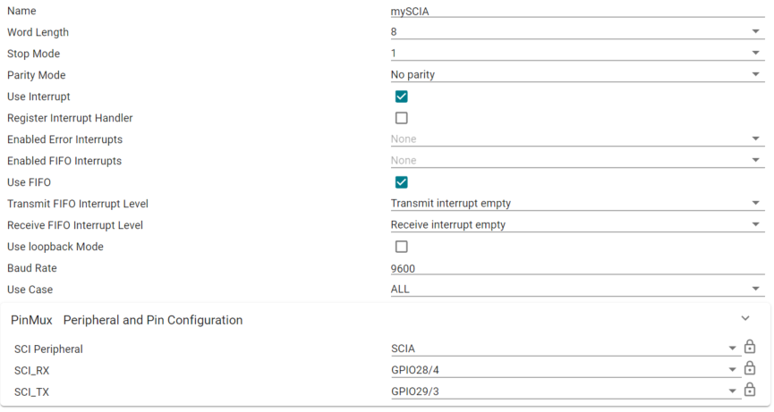
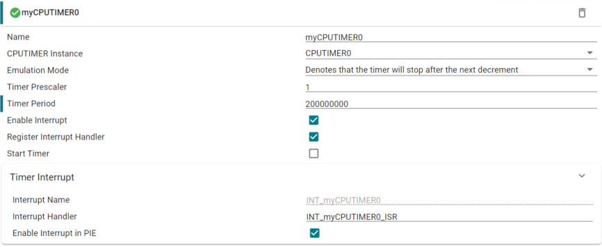
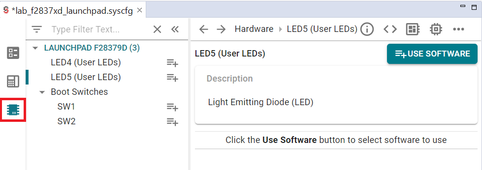
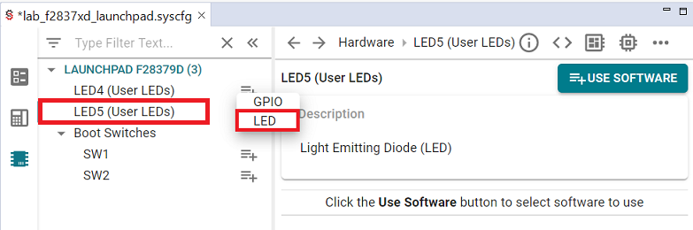
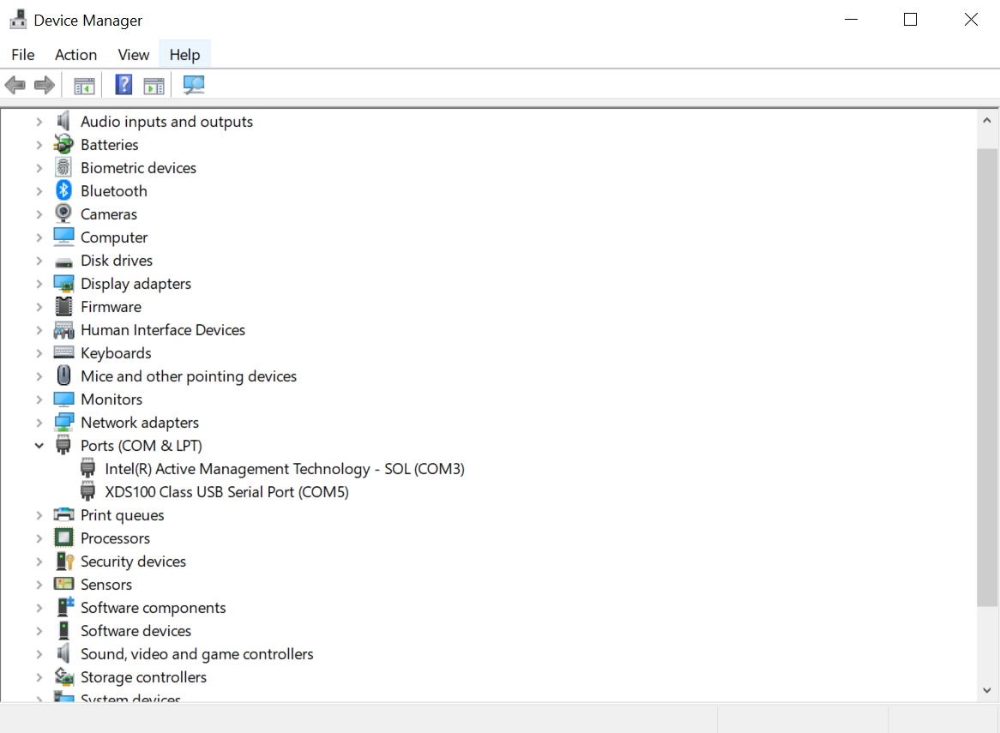
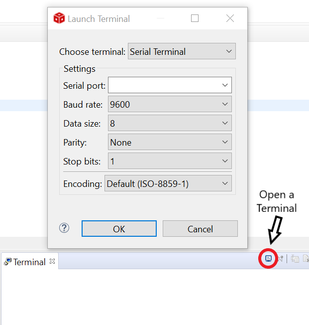
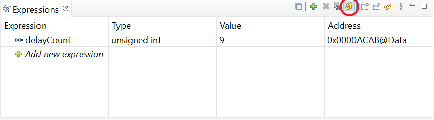

Serial Communication Interface (SCI) Lab#
The objective of this lab is to become familiar with the on-board SCI (Serial Communication Interface) by sending and receiving data between a C2000 device and a computer. We will use the computer to change the frequency of the blinking LED and then the board will echo this value back to the computer. This provides the ability to demonstrate bi-directional communication. Additionally, Code Composer Studio’s terminal feature will be explored and will be used to interact with the device.
Solution#
All solutions are available in the directory: <c2000ware_install_path>/training/device/<device_name>.
Introduction#
In this lab, we will learn to use the SCI module of C2000 real-time Microcontrollers by using TI LaunchPad or controlCARD. This module will help you understand how C28x devices communicate with external devices or with each other over SCI based serial communication. We will use SysConfig GUI to configure the SCI module for port configuration (baud-rate, word length, parity). It will also configure the CPU timer to control the rate of LED binking.
Lab Setup#
Hardware Setup#
You will need the following hardware for this lab:
A C2000 controlCARD or LaunchPad with the supplied USB cable.
Jumper cables.
Oscilloscope (optional).
Use the supplied USB cable to connect your C2000 board’s USB port to the standard USB Type-A connector in your computer. You should see some LEDs light up on your board. In addition to powering the board, a JTAG communication link is also established between the device and Code Composer Studio.
Software Setup#
The following software will need to be installed on your computer:
Import Empty Project#
Our first task is to import an empty project to our Code Composer Studio (CCS) workspace. The basic instructions are as follows:
Open CCS and go to Project→Import CCS Projects. A new window should appear. Ensure that the Select search-directory option is activated.
Click the Browse button and select the
[C20000ware_Install_dir]/training/device/[device]/empty_labdirectory. Note that the default Windows [C20000ware_Install_dir] isC:/ti/c2000/C2000Ware_4_xx_xx_xx.Under Discovered Projects, you should now see the
lab_[board]_[device]project. Select the appropriate project for either the control card or the launchpad.

Click Finish to import and copy the
lab_[board]_[device]project into your workspace.Rename the project to your liking
“Right-click on the project in Project Explorer pane”. Select ‘Rename’ from the drop down menu and rename the project to ‘c2000_adc_lab’ or a name of your choosing.
Now click the ‘Down Arrow’ located to the left of the imported project to expand it and select lab_main.c. Right-click on the file, and select ‘Rename’ to rename the file to c2000_sci_lab_main.c or a name of your choosing.
Part 1: SCI Setup#
The first setup is to setup the SCI-A peripheral with the following specifications:
Word Length of 8 bits
Stop Mode of 1
No Parity
FIFO enabled
Baud Rate of 9600
In order to do this, open the file with the “.syscfg” extension within the project by double clicking it. You’ll see the SysConfig tool open within CCS. Add an SCI module by clicking on the (+) sign next to it. Now, we can configure the setting to look like the below based on our configuration specifications.

Note:
The device will be communicating with the computer, so the SCI pins won’t need to be wired by hand.
If using the LAUNCHXL_F28379D EVM then the correct GPIOs are GPIO43 (SCIA RX) and GPIO42 (SCI TX)
If using the F2800137 or the F2800157 ControlCARD then the correct GPIOs are ‘GPIO28’ (SCIA RX) and ‘GPIO29’ (SCI TX)
You have now configured the SCI module for this lab.
Part 2: Timer Setup#
The next part is setting up a timer so that we can change the LED blink rate.
Key configurations for the timer include:
Use CPU Timer 0
Maximum period
Prescaler of 1 (SYSCLK)
Period of 1 second
Enable/generate interrupt when the timer has stopped counting
Add an instance of “CPUTIMER” found under the “System” category for SysConfig. After clicking the ‘Add’ button within SysConfig, you’ll notice that the options are able to be edited.
The configuration for Timer 0 should look like the below image.
To set up the correct timer period we can use the following formula:
timer period = (uint32_t)( (freq / 1000000) * period);
Where ‘freq’ is the device frequency in Hz, and ‘period’ is the period value you desire in microseconds
Ex. Device frequency is 200MHz and desired period is every second
period = (uint32_t)( (200E6 / 1000000) * 1000000) = 200000000

You have now configured the timer for this lab.
Part 3: LED Setup#
We need to setup the LED who’s blink rate will change depending on the value entered within the command line.
Steps to add GPIO configuration:#
In the project, open the
.syscfgfile by double-clicking it.In the SysConfig GUI, select the “Hardware” tab, as shown below.

If you have a Launchpad, click ‘+’ to add LED5. If you have a controlCard, click ‘+’ to add D2.
Select the LED option like below.

Part 4: Application Code#
Now that we have set up the SCI and Timer modules within SysConfig we can move on to actually writing the application code for the intent of this lab.
Task 1: Timer ISR#
For the CPU Timer Interrupt Service Routine (ISR) we have to define when to change the LED
to achieve different blink rates based on the delayCount. delayCount will be the value
we pass in through the terminal to change the rate at which the LED blinks.
The ISR below is entered every time the timer decrements to zero (after a full period). In this
case we setup the timer to interrupt every second. The code below is adding one to cpuTimer0IntCount
every time the ISR is entered. Once this value is greater than or equal to delayCount the LED will toggle
its output state. Thus,
Blink Rate = (1 second) * delayCount
//
// ISR for CPUTIMER0 to change LED blink rate based on input to delayCount
//
__interrupt void INT_myCPUTIMER0_ISR(void)
{
cpuTimer0IntCount++;
if (cpuTimer0IntCount >= delayCount){
cpuTimer0IntCount = 0;
GPIO_togglePin(myBoardLED0_GPIO);
}
//
// Acknowledge this interrupt to receive more interrupts from group 1
//
Interrupt_clearACKGroup(INT_myCPUTIMER0_INTERRUPT_ACK_GROUP);
}
main.c :: INT_myCPUTIMER0_ISR()
Task 2: .c File Setup#
In our main (.c) file you’ll notice that board.h is called. This is the header
file that is being generated by SysConfig. The driverlib.h and device.h header
files are also included by default, since these define the board specific
functions and IPs.
//
// Included Files
//
#include "driverlib.h"
#include "device.h"
#include "board.h"
We need to define two global variables, cpuTimer0IntCount and delayCount. These
two variables will allow us to change the LED blink rate and allow us to control
when the LED is toggled. Insert the following code after the board.h include.
//
// Globals
//
uint16_t cpuTimer0IntCount; //number of times TIMER 0 ISR is triggered
uint16_t delayCount; //number (0-9) to scale the LED frequency
.c file
Now, we will outline any function calls required for this lab.
//
// Function Prototypes
//
__interrupt void INT_myCPUTIMER0_ISR(void);
.c file
We begin our main() by initializing the device. By
default “Board_init();” is called in the Main() function. For now, we can
remove this, as we will be adding it back later.
//
// Main
//
void main(void)
{
//
// CPU Initialization
//
Device_init();
Interrupt_initModule();
Interrupt_initVectorTable();
//
// Configure GPIO pins
//
Device_initGPIO();
//
// Initialize the SCI and Timer Modules
//
Board_init();
//
// Enable global interrupts and real-time debug
//
EINT;
ERTM;
//
// Start CPU Timer 0
//
CPUTimer_startTimer(myCPUTIMER0_BASE);
main.c
Now we will declare three variables within our main() function: msg (used to send a message to the terminal), receivedChar (used to read in a character from the terminal), and rxStatus (used to store the status of the SCI Rx register). Finally, we send our starting message from the device to the connected computer.
//
// Define local variables
//
char* msg; // Message sent through terminal window
char receivedChar; // Variable used to track input from the terminal window
uint16_t rxStatus = 0U; // Variable used to store the status of the SCI RX Register
//
// Send starting message.
//
msg = "\r\n\n\nHello World! Enter a number 0-9 to change the LED blink rate\0";
SCI_writeCharArray(mySCIA_BASE, (uint16_t*)msg, 65);
main.c
The last part of our main function is a loop where we prompt the user
to enter a number 0-9, read in the number, and then echo it back to
them. We use the blocking function SCI_readCharBlockingFIFO() to
pause the code from continuing until a number is inputted. Notice how
our global variable delayCount is set every time we read in a character.
This variable is used in our CPUTIMER0 ISR and allows us to change the
frequency of LED.
for(;;)
{
msg = "\r\nEnter a number 0-9: \0";
SCI_writeCharArray(mySCIA_BASE, (uint16_t*)msg, 24);
//
// Read a character from the FIFO.
//
receivedChar = SCI_readCharBlockingFIFO(mySCIA_BASE);
SCI_writeCharBlockingFIFO(mySCIA_BASE, receivedChar);
//Turns character to digit
delayCount = receivedChar - '0';
rxStatus = SCI_getRxStatus(mySCIA_BASE);
if((rxStatus & SCI_RXSTATUS_ERROR) != 0)
{
//
//If Execution stops here there is some error
//Analyze SCI_getRxStatus() API return value
//
ESTOP0;
}
//
// Echo back the character.
//
msg = " LED set to blink rate \0";
SCI_writeCharArray(mySCIA_BASE, (uint16_t*)msg, 25);
}
} // end of main
.c file
Part 5: Running the Program#
Build and Run#
Make sure your board is connected to your computer.
Click the “Build” button and watch the tools run in the Console window. Check for errors in the Problems window, and fix any that may have occurred.
Setup a debug and target configuration. For more information on launching a target configuration refer to Getting Started module → “Build and Load the Project” → “Setup Target Configuration”.
Run the Code#
Now that you are in the debug perspective, the program should be paused at the first line of code in
main().Open a terminal in CCS by clicking
Viewand thenTerminal. A terminal window should pop open.If you do not know what COM Serial Port the device is connected to you will need to determine this. On Windows 10, this can most easily be done by searching for Device Manager in your Windows Search Bar and then scrolling down to Ports. Look for “User UART (COMX)” or “USB Serial Port (COMX)” where X represents a number. For example in the below image, the identified port would be COM Serial Port 5. Remember your COM Serial Port for the next step.

Create a new terminal by clicking Open a Terminal in the top right corner of the Terminal Window, and set the terminal to the following settings. Additionally, input the COM Serial Port associated with the device.

Finally, scroll to the global variable
delayCountand highlight it. Then right-click and select Add Watch Expression…In the Watch Expression Window, click on the
Continuous Refreshbutton so that the visual is updated as the code is running.

Now click
Resumein the menu bar to run the code.A message should appear in the terminal and
LEDon your device should be blinking at approximately 5 Hz for a device running at 200 MHz.Enter a number from 0 to 9 and watch as the value for
delayCountchanges in the Expressions Window. Also watch as the frequency of the LED on the device changes with the delayCount. Try this again with a different number.Now again go to the expressions window and add
SciaRegs.SCIRXEMU. Also addSciaRegs.SCIRXBUF.Enter a number 0-9 in the terminal.
What values do you see in the SCIA registers?
In SciaRegs.SCIRXEMU, you should see the ASCII value of the number you most recently entered.
While not a real physical register, this register allows us to peak into the SCIRX buffer while
debugging.
SciaRegs.SCIRXBUF is a bit more complicated. Try entering a number you have not entered yet in the
terminal. Check what the ASCII value for this number is and continue entering this number in the
terminal until the ASCII value populates the SciaRegs.SCIRXBUF field in theExpressions Window.
How many times did you need to input a number before it appeared in the SciaRegs.SCIRXBUF field?
Does this number correspond to the SCI Rx Buffer size? As you may have realized by now, this expression
allows us to see the last element in the physical buffer.
You have now completed the lab and have successfully sent data to and from the device. Terminate the active debug session using the Terminate button. This will close the debugger and return Code Composer Studio to the CCS Edit perspective view. Also close the project by right clicking on the project in the Project Explorer.
Full Solution#
The full solution to this lab exercise is included as part of the C2000Ware SDK. Import the project from
<c2000ware_install_path>/training/device/<device_name>/communication_peripherals/lab_sci.
Feedback
Please provide any feedback you may have about the content within C2000 Academy to: c2000_academy_feedback@list.ti.com